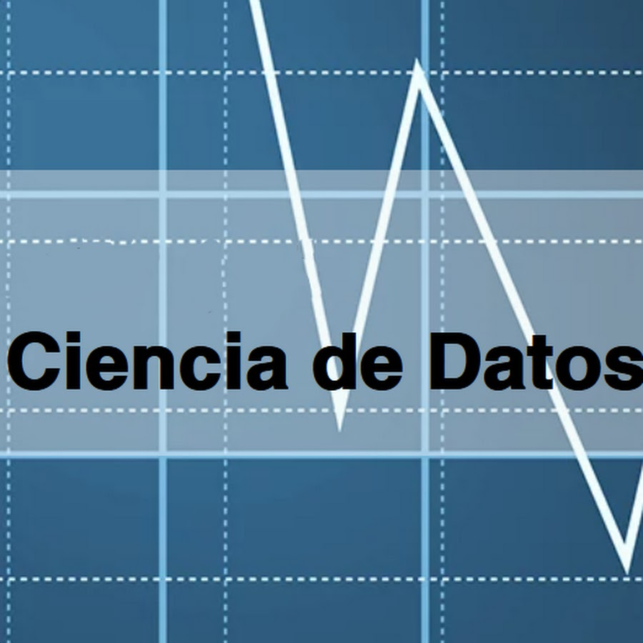

Hardcore Group at UAM Iztapalapa
- Gabriel Núñez — Bayesian Statistics
- Oscar Yáñez — Electrical and Biomedical Engineering
- Gabriel Escarela — Statistics
- Alejandro R. Vásquez — Computational Statistics
- Héctor Morales — Imaging and Inverse Problems
Comité Organizador del Seminario de Ciencia de Datos (División de CBI)
Alejandro R. Vásquez, Gabriel Escarela, Gabriel Núñez y Héctor Morales.
Sesiones del Seminario Divisional en YouTube

Ciencia Datos UAM-I
Grabaciones del Seminario Divisional de Ciencia de Datos.
Una Travesía por la Ciencia de Datos para Matemáticos y No Matemáticos
- Mat. Daniel Miranda Fournier. Los Conteos Rápidos del INE y la topología del Simplex. MCMAI, UAM-I. Septiembre 17, 2020.
- Mat. Neyva Dimayuga, Mat. Alejandra Moreno y Mat. Edoardo Sánchez. El Algoritmo EM y el modelo de mezcla de Normales. MCMAI, UAM-I. Octubre 8, 2020.
- M. en B.I. Óscar Yáñez Suárez. Cuantificación vectorial y el análisis de conglomerados. Departamento de Ingeniería Eléctrica. Grupo de Ciencia de Datos, CBI, UAM-I. Noviembre 12, 2020.
- Dr. Carlos Valero Valdés. Una introducción a Julia. Departamento de Matemáticas, Universidad de Guanajuato. Febrero 4, 2021.
- Dr. Fabian A. Martínez Martínez. Una introducción a la Estadística Bayesiana no paramétrica. Departamento de Matemáticas. Grupo de Ciencia de Datos, CBI, UAM-I. Marzo 25, 2021.
- Mat. Erick Iván Guerrero Flores. Inferencia Bayesiana en modelos de ecuaciones diferenciales: Un enfoque computacional. MCMAI, UAM-I. Abril 8, 2021.
- Dr. Aldo Ledesma Durán. Estabilidad de espirales en un sistema RD a partir del enfoque de Ginzburg-Landau y su aplicación al problema de enfermedades en el corazón. Departamento de Matemáticas, UAM-I. Agosto 19, 2021.
Seminario de Ciencia de Datos (2019 – 2026)
- Dr. Emmanuel Ambriz. Functional Signed Directionality: cuantiles, asimetría y bandas de probabilidad en espacios funcionales. King Abdullah University of Science and Technology (KAUST), Saudi Arabia. May 7, 2026.
- Dr. Gabriel Adrián Salcedo Varela. Inferencia bayesiana para ecuaciones diferenciales estocásticas mediante la expansión en caos de Wiener. Área de Probabilidad y Estadística, Departamento de Matemáticas, UAM Iztapalapa. February 19, 2026.
- Dr. Andrey Novikov. Avances recientes en el análisis estadístico secuencial. Área de Probabilidad y Estadística, Departamento de Matemáticas, UAM Iztapalapa. February 19, 2026.
- Dr. Gonzalo Pérez de la Cruz. Modelos gráficos probabilísticos y regresión logística Lasso en clasificación supervisada. Departamento de Matemáticas, Facultad de Ciencias, UNAM. December 11, 2025.
- Dr. José Franco Aguilar. Operacionalizando conceptos sociales: Tensión y límites de la Ciencia de Datos en la cuantificación (El caso de la movilidad humana). Departamento de Sociología, UAM Iztapalapa. November 27, 2025.
- Dr. José Antonio Perusquía Cortés. Detección y Clasificación de Malware vía N-Gramas. Departamento de Matemáticas, Facultad de Ciencias, UNAM. August 7, 2025.
- M. en C. Luis Enrique Ascencio Gorozpe. Estadística en Altas Dimensiones: la Maldición de la Dimensión y las Técnicas de Reducción Dimensional. Área de Probabilidad y Estadística, Centro de Investigación en Matemáticas A.C. (CIMAT). July 24, 2025.
- Dr. Francisco de Jesús Corona Villavicencio. Analizando las dinámicas comunes de la inflación en México: ¿mejoran la precisión de los pronósticos? Dirección General de Integración, Análisis e Investigación, Instituto Nacional de Estadística y Geografía (INEGI). July 10, 2025.
- Dr. Eduardo A. Gutiérrez Peña. Probabilidad, Estadística y Ciencia de Datos. Departamento de Probabilidad y Estadística del Instituto de Investigaciones en Matemáticas Aplicadas y en Sistemas (IIMAS), UNAM. June 12, 2025.
- Dra. Elizabeth González Estrada. Algunas propiedades de la distribución normal asimétrica y su uso en pruebas de hipótesis. Área de Estadística, Colegio de Postgraduados, Texcoco. March 27, 2025.
- Dr. César A. Berlanga Robles. Variaciones espacio-temporales de los humedales costeros del noreste de México: Aproximaciones con técnicas de Percepción Remota y Sistemas de Información Geográfica (SIG). Laboratorio de Manejo Ambiental del Centro de Investigación en Alimentación y Desarrollo (CIAD) Mazatlán, México. February 27, 2025.
- Dr. Oscar Fontanelli Espinosa. Las áreas funcionales de movilidad en México y su evolución al inicio de la pandemia. Facultad Latinoamericana de Ciencias Sociales (FLACSO) México. Diciembre 19, 2024.
- Dr. Ricardo Marcelín Jiménez. Los retos del almacenamiento masivo de la información. Área de Redes y Telecomunicaciones, Departamento de Ingeniería Eléctrica, UAM-I. Diciembre 5, 2024.
- Dr. Francisco Javier Rubio Álvarez. Dynamic Survival Analysis: modelling the hazard function via ordinary differential equations. Department of Statistical Science, University College London, UK. Octubre 31, 2024.
- Dr. Jorge Garza Olguín. Uso de métodos estocásticos para la búsqueda de estructuras químicas. Área de Fisicoquímica Teórica del Departamento de Química de la UAM-I; Jefe del Departamento de Química de la UAM-I. Agosto 29, 2024.
- M. en C. Arnoldo Daniel Miranda Fournier. Una familia de modelos cópula para datos toroidales. Doctorado en Ciencias (Matemáticas), UAM-I. Agosto 15, 2024.
- Dr. Juan Eduardo Vargas. Inteligencia artificial generativa. Director of the Universal Parallel Computing Research Center, Microsoft, USA. Mayo 28, 2024.
- M. en C. Joel Montesinos Vázquez. Modelos para describir datos circulares acotados multivariados. Doctorado en Ciencias (Matemáticas), UAM-I. Mayo 16, 2024.
- Dr. Gabriel Núñez Antonio. La ciencia de datos y los conteos rápidos del INE. Área de Probabilidad y Estadística, Departamento de Matemáticas, UAM-I. Mayo 2, 2024.
- Dr. Jorge Bolaños Servín, Dr. Gabriel Escarela Pérez, Dr. Asael Fabian Martínez Martínez, Dr. Gabriel Núñez Antonio, Dr. José Héctor Morales Bárcenas, Dr. Alejandro Román Vásquez y M. en IB. Óscar Yáñez Suárez. Hablemos de Ciencia de Datos: Perspectivas y Proyectos. Departamento de Matemáticas y Departamento de Ingeniería Eléctrica, UAM-I. Abril 18, 2024.
- Dr. Enrique Rodríguez de la Colina. Redes de radios cognitivos y sus aplicaciones. Área de Redes y Telecomunicaciones, Departamento de Ingeniería Eléctrica, UAM-I. 22 de septiembre, 2022.
- Dr. Luis Alberto Barboza Chinchilla. Emulador estadístico espacio-temporal con downscaling para modelos climáticos regionales. Director del Centro de Investigación en Matemática Pura y Aplicada (CIMPA), Universidad de Costa Rica. 21 de julio, 2022.
- Dra. Martha R. Ortíz Posadas. Modelación de problemas médico-biológicos con el enfoque lógico-combinatorio de reconocimiento de patrones. Laboratorio de Informática Médica, Departamento de Ingeniería Eléctrica, UAM-I. 28 de abril, 2022.
- Dra. Ginestra Bianconi. Higher-order Networks. Professor in Applied Mathematics, School of Mathematical Sciences, Queen Mary University of London. April 7, 2022.
- Dr. Isaac Pérez Castillo. Física estadística de matrices aleatorias. Departamento de Física, UAM Iztapalapa. 17 de marzo, 2022.
- Dr. Jorge Nocedal. The Fundamental Role of Optimization in Machine Learning. Director, Center for Optimization and Statistical Learning, Department of Industrial Engineering and Management Sciences, Northwestern University. Diciembre 16, 2021.
- Dra. Yury Elena García Puerta. Siguiendo el rastro de lo invisible: Modelos Matemáticos y Epidemias. Center for Healthcare Policy and Research, Public Health Sciences, University of California, Davis. Diciembre 2, 2021.
- Dra. Lilí Guadarrama Busto. Diagnóstico de enfermedades en plantas. CIMAT Aguascalientes. Noviembre 18, 2021.
- Dr. Juan Calvo Yagüe. Modeling protein polymerization in the context of neurodegenerative diseases. Facultad de Ciencias, Departamento de Matemática Aplicada, Universidad de Granada. Noviembre 11, 2021.
- Dr. Anderson Rocha. The Convergence Revolution and Artificial Intelligence: Actions in Covid-19, Diabetes, Neuroscience and Digital Forensics. Director of The Institute of Computing, University of Campinas, São Paulo, Brasil. Octubre 13, 2021.
- Dr. Pablo Padilla Longoria. Análisis de datos musicales. Departamento de Matemáticas y Mecánica, IIMAS, UNAM. Septiembre 2, 2021.
- Dra. Elisa Domínguez Hüttinger. Biología de sistemas para entender, frenar y revertir enfermedades de la piel. Departamento de Biología Molecular y Biotecnología, Instituto de Investigaciones Biomédicas, UNAM. Agosto 26, 2021.
- Dr. Alejandro Reyes Esqueda. Información cuántica: una visión desde la plasmónica. Departamento de Estado Sólido, IFUNAM. Mayo 13, 2021.
- Dra. Lizbeth Naranjo Albarrán. Modelos de Markov Ocultos y Errores de Medición. Departamento de Matemáticas, Facultad de Ciencias, UNAM. Mayo 6, 2021.
- Dr. Hiroshi Kori. Tackling Complex Dynamics in Biology and Chemistry with Phase Oscillator Models. Department of Complexity Science and Engineering, The University of Tokyo. Abril 22, 2021.
- Dr. J. Héctor Morales Bárcenas. Problemas inversos, análisis de imágenes y ciencia de datos. Departamento de Matemáticas, Grupo de Ciencia de Datos, CBI, UAM-I. Febrero 25, 2021.
- Dr. Jorge Bolaños Servín. Semigrupos no conmutativos y sistemas cuánticos abiertos. Departamento de Matemáticas, Grupo de Ciencia de Datos, CBI, UAM-I. Diciembre 10, 2020.
- Dr. Antonio E. Lazcano Araujo. Origen de la vida: células, virus y el mundo del RNA. Facultad de Ciencias (Laboratorio de Origen de la Vida), UNAM y miembro de El Colegio Nacional. Octubre 29, 2020.
- Dra. Dialid Santiago Ramírez. Una invitación a la industria financiera: Introducción a los problemas de riesgo cuantitativo en la banca corporativa y de inversión. Vice President Quantitative Analyst – Global Markets, Bank of America. Septiembre 25, 2020.
- Mat. Mariana Paola Ramos Gordillo. Modelación de datos composicionales vía mezclas infinitas de distribuciones gamma multivariadas. MCMAI, UAM-I. Enero 29, 2020.
- Fís. Efrén Hernández Ramírez. Un modelo experimental preclínico de fraccionamiento de irradiación con fotones para la inducción y evaluación de radio-osteoporosis. Maestría en Ciencias, Física Médica, UNAM. Noviembre 19, 2019.
- Dr. Rubén Y. M. Fossion. Series de tiempo fisiológicas y regulación homeostática como problema directo y problema inverso. Coordinador Académico del Centro de Ciencias de la Complejidad (C3) e investigador del Instituto de Ciencias Nucleares, UNAM. Octubre 1, 2019.
Numeralia
10
Mujeres participantes
37
Hombres participantes
9
Estudiantes participantes
4
Directores de instituto o centros de investigación
1
Miembro de El Colegio Nacional (Dr. Antonio Lazcano, UNAM)
Directores de Instituto o Centros de Investigación Participantes
- Dr. Anderson Rocha. Institute of Computing, Universidade Estadual de Campinas (Unicamp), Brasil.
- Dr. Jorge Nocedal. Center for Optimization and Statistical Learning, Northwestern University, EUA.
- Dr. Luis A. Barboza Chinchilla. Director del CIMPA, Universidad de Costa Rica, Costa Rica.
- Dr. Juan Eduardo Vargas. Director of the Universal Parallel Computing Research Center, Microsoft, EUA.
Instituciones y Países Participantes
Instituciones mexicanas participantes: 26 UAM-I, 7 UNAM, 1 U. de Guanajuato, 1 CIMAT, 1 FLACSO, 1 CIAD.
País de origen de los participantes: 36 México, 3 Reino Unido, 3 Estados Unidos, 1 Japón, 1 España, 1 Brasil, 1 Costa Rica, 1 Arabia Saudita.
Temas Clave
- Complejidad
- Machine Learning
- Análisis de imágenes
- Problemas inversos
- Estadística bayesiana
- Estadística espacial
- Epidemias
- Reconocimiento de patrones
- Modelos de Markov
- Biología
- Medicina
- Inteligencia artificial
- Sistemas
- Música
- Información cuántica
- Virus
- Covid-19
- Cómputo científico
- Programación
- Elecciones
- Conteos
- Conglomerados
- Física estadística